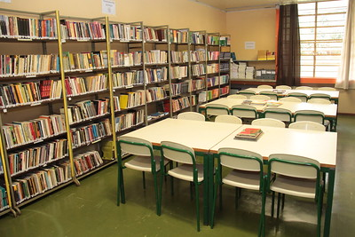
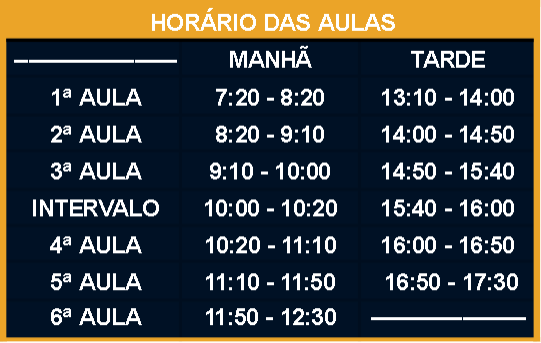

Colégio Estadual Ivo Leão
é uma escola pública estadual em Curitiba.
Nessa instituição de ensino de educação básica há o funcionamento das etapas de formação de Ensino Fundamental e Ensino Médio.

é uma escola pública estadual em Curitiba.
Nessa instituição de ensino de educação básica há o funcionamento das etapas de formação de Ensino Fundamental e Ensino Médio.
O Colégio Estadual Ivo Leão foi inaugurado em 1977 com a denominação de “Escola Estadual Ivo Leão - Ensino de 1° Grau”, e atualmente oferta os cursos de ensino fundamental e Médio. Seu nome é uma homenagem a Ivo Leão - engenheiro civil, industrial dos ramos madeireiro e de erva mate.
Contamos com professores capacitados para um ensino de qualidade! Temos uma boa estrutura, com salas espaçosas e uma área exterior ampla e verde.


Horário das aulas do turno da manhã e da tarde!
R. Nossa Sra. da Cabeça, 1183 - Cidade Industrial de Curitiba, Curitiba - PR, 81310-010

(41) 3248-8458
@colegioivoleao